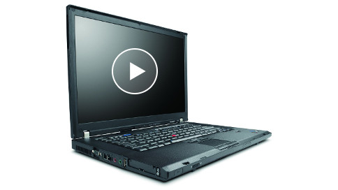
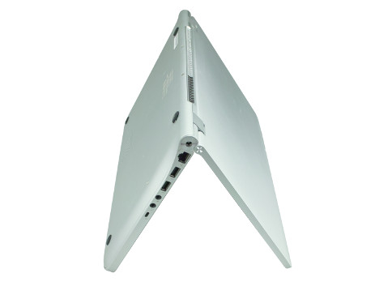
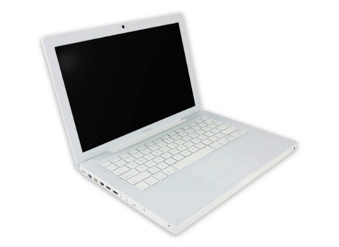

See how LibreBoot T60 beats the competition With unmatched image quality, front facing camera with video, and a keyboard, the LibreBoot T60 beats the MacBook Air. Learn more 
The Lemote Yeeloong is as versatile as you are With 180 degree rotation, a screen with amazing resolution, and Lemote mind control, the Yeeloong outshines the competition. Learn more 
The Apple MacBook 2,1 makes work easy With hours of battery life, plus software already built in, the Apple MacBook 2,1 is designed for computing on-the-go. Available starting at a price. Learn more 